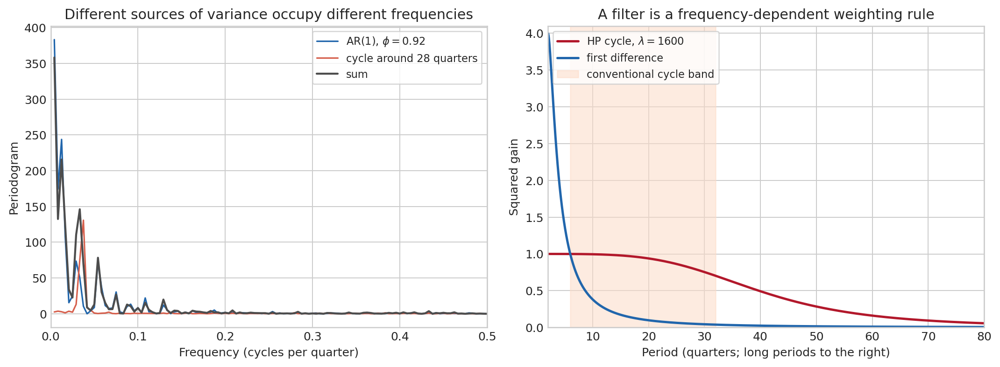
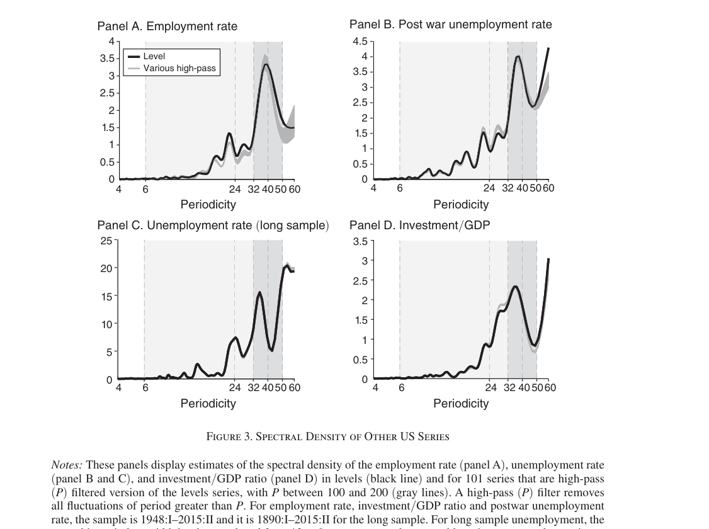
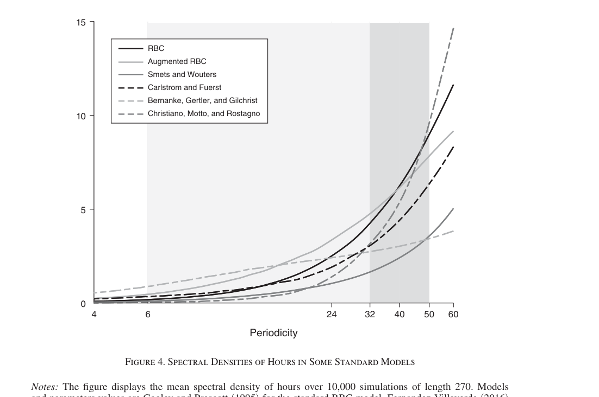
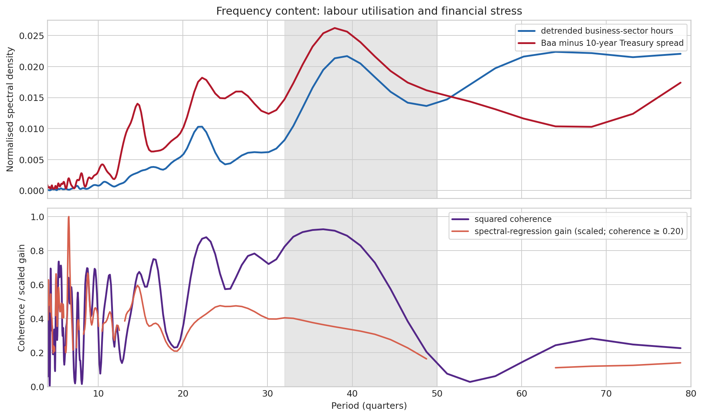
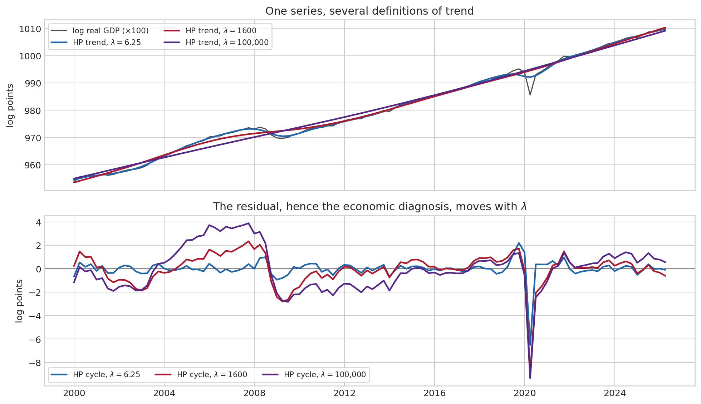
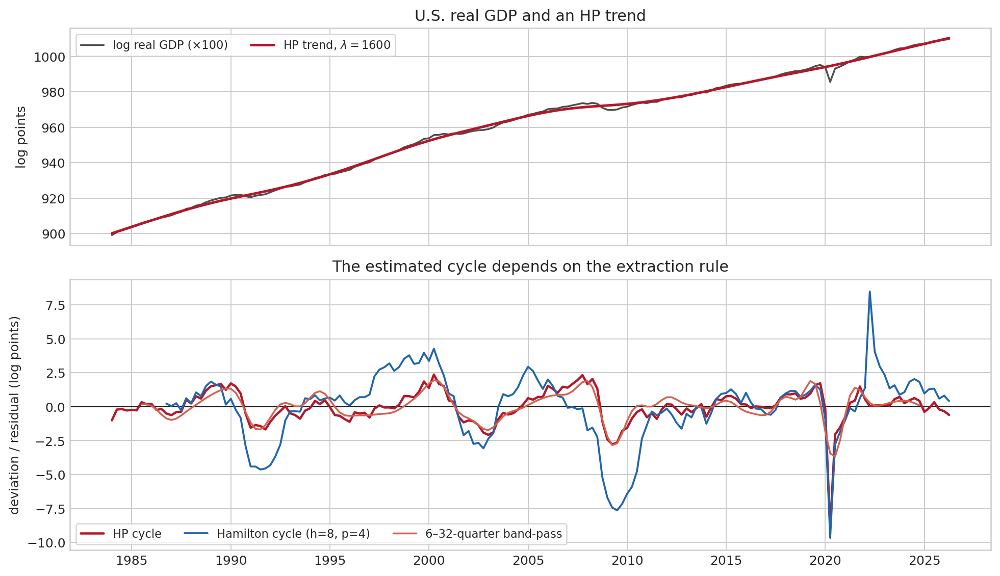
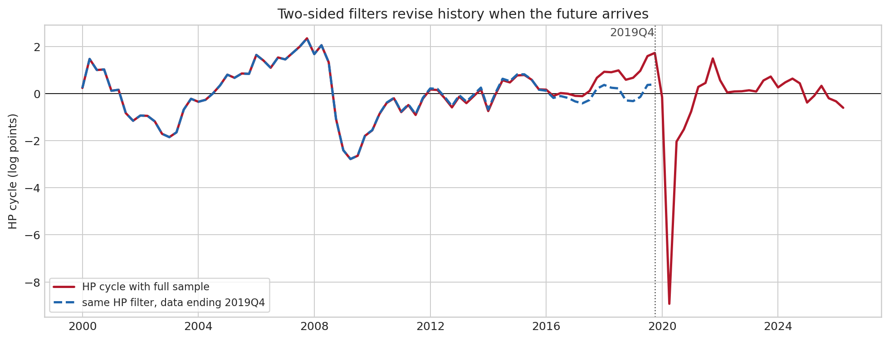

3 Frequency-Domain Analysis and Filtering
The preceding chapters describe persistence in the time domain: an ACF asks how strongly \(X_t\) is related to \(X_{t-h}\), and an ARMA model describes how a shock propagates through successive dates. The frequency domain asks the same question from another angle: how is the variance of a stationary series distributed across fast and slow oscillations? This perspective is indispensable when the empirical question itself is stated in terms of trend, business cycle, seasonal fluctuation, or financial cycle.
Filtering requires the same precision. A filter assigns weights to movements of different periodicities, and those weights determine the object that emerges from the data. Once the rule is explicit, its economic content and its limits can be assessed.
3.1 From time to frequency
Periods, frequencies, and the sampling constraint
A sinusoid \(x_t = A\cos(\omega t + \varphi)\) has amplitude \(A\), angular frequency \(\omega\) (radians per observation), and phase \(\varphi\). Its period is \(P = 2\pi/\omega\): a low \(\omega\) means a long, slow movement; a high \(\omega\) means a rapid movement. With quarterly observations, \(\omega = 2\pi/20\) corresponds to a five-year (20-quarter) cycle.
Because discrete-time data are observed only once per period, all distinct frequencies lie in the Nyquist interval \([0,\pi]\) (equivalently 0 to 0.5 cycles per quarter). A component whose true period is below two observations cannot be distinguished from a lower-frequency component in the sample: this is aliasing. No econometric method can recover variation that the sampling frequency has already discarded. This is why quarterly data cannot reveal a monthly seasonal pattern, and why temporal aggregation changes the object being modelled.
A spectral peak near a period of 24 quarters says that the series contains unusually much variance at a rhythm of roughly six years. It does not establish that the economy is driven by a literal six-year clock, nor that one variable causes another. A deterministic sinusoid produces a sharp line in a spectrum; a stochastic, irregular business cycle usually produces a broad hump. Frequency analysis describes a second-order pattern; interpretation still requires economics and identification.
Fourier representation and the spectrum
The basic Fourier construction, its link to stationarity, and its time-domain interpretation are introduced in Section 7.
For a covariance-stationary process with autocovariance \(\gamma(h)\), the spectral density is its Fourier transform,
\[ f_X(\omega) = \frac{1}{2\pi}\sum_{h=-\infty}^{\infty}\gamma(h)e^{-i\omega h}, \qquad -\pi\leq\omega\leq\pi. \tag{3.1}\]
The inverse transform recovers the autocovariance,
\[ \gamma(h) = \int_{-\pi}^{\pi} e^{i\omega h}f_X(\omega)\,d\omega, \qquad \mathrm{Var}(X_t)=\gamma(0)=\int_{-\pi}^{\pi} f_X(\omega)\,d\omega. \tag{3.2}\]
Thus the area under \(f_X\) is variance, and the area over a frequency band is the part of variance attributable to movements in that band. This is exactly the same information as the full autocovariance function, merely expressed in a different basis. Strong positive autocorrelation at many lags becomes power concentrated near zero frequency; alternating autocorrelation becomes power at higher frequencies.
For the stationary AR(1), \(X_t=\phi X_{t-1}+\varepsilon_t\), \(|\phi|<1\), with innovation variance \(\sigma_\varepsilon^2\),
\[ f_X(\omega)=\frac{\sigma_\varepsilon^2}{2\pi\left|1-\phi e^{-i\omega}\right|^2} =\frac{\sigma_\varepsilon^2}{2\pi(1-2\phi\cos\omega+\phi^2)}. \tag{3.3}\]
If \(\phi\) is near \(1\), shocks are persistent and the denominator is small near \(\omega=0\): low frequencies dominate. If \(\phi<0\), the spectrum instead peaks near \(\pi\), the signature of rapid alternation. Equation Equation 3.3 is the frequency-domain counterpart of the slowly decaying ACF \(\rho(h)=\phi^h\).

3.2 Estimating a spectrum
Given \(T\) observations, the Fourier frequencies are \(\omega_j=2\pi j/T\), \(j=0,\ldots,\lfloor T/2\rfloor\). The periodogram is
\[ I(\omega_j)=\frac{1}{2\pi T}\left|\sum_{t=1}^{T}(X_t-\bar X)e^{-i\omega_jt}\right|^2. \tag{3.4}\]
It is a natural sample analogue of the spectrum, but a crucial warning is often missed: at an individual frequency, \(I(\omega_j)\) is not consistent for \(f_X(\omega_j)\). Increasing \(T\) gives more Fourier ordinates, not a less variable ordinate. A usable non-parametric estimator therefore averages neighbouring ordinates (a smoothed periodogram) or smooths the sample autocovariances before transforming them. The smoothing bandwidth is a bias–variance choice: a narrow window preserves narrow features but is noisy; a wide window is stable but can erase them.
Leakage is the finite-sample companion of this problem. The sample contains a truncated portion of the process; a component that does not fit an integer number of cycles into the sample spills power into nearby frequencies. Tapers (Bartlett, Hanning, etc.) soften the artificial discontinuity at the sample boundaries, reducing leakage at the cost of resolution. A spectral graph without a stated detrending, taper, and smoothing choice is therefore not fully reproducible.
A spectral fact about business cycles: a peak near ten years?
The usual 6–32-quarter definition of the business cycle is a useful convention, but it is not an empirical law. Beaudry, Galizia, and Portier (Beaudry et al. 2020) ask a deliberately simple question: after isolating the low-frequency trend problem, do cyclically sensitive U.S. variables contain an unusually large amount of variance at a particular period? Their answer is a robust local peak around 32–50 quarters (roughly 8–12.5 years) for labour-market utilisation, unemployment, investment relative to GDP, and financial-risk measures.

code/python/extract_paper_figures.py.
The methodological lesson is at least as important as the peak itself. Their online appendix constructs the Schuster periodogram, evaluates the DFT on a fine grid by zero-padding to 1,024 points, and smooths it with a Hamming window of width 13 (Beaudry et al. 2020). Zero-padding makes a long-period graph easier to read because it fills in the frequency grid; it does not create extra observations or turn an inconsistent raw periodogram into a precise estimator. The appendix then varies the smoothing window, padding, detrending rule, and covariance-based estimator. This is the right standard for a claim about a peak: show that it survives defensible estimation choices, and report uncertainty rather than selecting a single attractive graph.
All persistent macro series have much low-frequency power. The distinctive claim is not that there is variance at 40 quarters, but that the spectrum rises and then falls locally around that region, relative to nearby periods and to a benchmark such as an AR(1). A monotone spectrum in period has the familiar “Granger shape” of a persistent shock-driven process; a hump suggests a preferred recurrent timescale. The latter is suggestive evidence for endogenous propagation, not proof of a deterministic clock.
What the usual DSGE benchmark misses
This perspective gives a sharp model diagnostic. A model should not merely match volatility, correlations, or an impulse response at a few horizons: it should allocate variance over frequencies in a way that resembles the data. Beaudry, Galizia, and Portier simulate six benchmark DSGE specifications and compare the spectrum of hours: a basic RBC model, an augmented RBC model, the Smets–Wouters New Keynesian model, and three financial-frictions models, including the Bernanke–Gertler–Gilchrist financial accelerator.

code/python/extract_paper_figures.py.
The conclusion must be read at the right level. Figure Figure 3.3 does not prove that every RBC, NK, or financial-accelerator model is unable to generate a spectral hump. It shows that the standard calibrated or estimated versions in that comparison do not reproduce this fact: their internal propagation is too weak, so persistence largely inherits the monotone spectrum of their exogenous shocks. In the authors’ account, stronger endogenous feedback, including demand complementarities interacting with financial conditions, can instead produce damped or stochastic limit-cycle behaviour. For teaching purposes, the key distinction is simple: persistent shocks can make a series slow; complex internal roots close to the unit circle can make it oscillate around a preferred period.
For an AR(2), this distinction is already visible without a full DSGE model. Complex roots yield a spectrum with a potential interior maximum. In the parameterization
\[ X_t=\phi_1X_{t-1}+\phi_2X_{t-2}+\varepsilon_t, \]
the spectrum is \(f_X(\omega)=\sigma_\varepsilon^2/[2\pi|1-\phi_1e^{-i\omega}-\phi_2e^{-2i\omega}|^2]\). A positive, slowly decaying AR(1) instead concentrates power progressively toward long periods. Thus a spectral comparison asks a model to match more than “persistence”: it asks whether its propagation mechanism has the right shape.
Financial cycles: an application with an even lower frequency
The same logic guards against defining a financial cycle by a filter before examining the data. Strohsal, Proaño, and Wolters (Strohsal et al. 2019) estimate univariate and multivariate spectra parametrically, rather than imposing a band in advance. They find that the U.S. and U.K. financial-cycle indicators have a dominant period close to 15 years in their post-1985 sample, longer than a conventional business cycle, while the evidence is much weaker for Germany. Their result is deliberately conditional on country, measure, and sample split: “the financial cycle” is an empirical proposition to test, not a universal 8–32-year filter setting.
For long financial cycles, a parametric spectrum can be particularly useful because a finite sample contains few complete low-frequency oscillations. If an invertible ARMA model is adequate,
\[ X_t=\frac{\theta(L)}{\phi(L)}\varepsilon_t \quad\Longrightarrow\quad f_X(\omega)=\frac{\sigma_\varepsilon^2}{2\pi} \frac{|\theta(e^{-i\omega})|^2}{|\phi(e^{-i\omega})|^2}. \tag{3.5}\]
Estimating the ARMA coefficients pools information across frequencies and supplies a smooth spectrum, but moves the risk to specification error. The practical complement is transparent non-parametric evidence, sensitivity to the sample, and confidence intervals or bootstrap tests, as in the supplied papers.
Everything in this chapter’s ordinary spectral analysis is built on weak (covariance) stationarity: a constant mean and a covariance \(\gamma(h)\) that depends only on the lag. In practice the target therefore has to be \(I(0)\) after a justified transformation. A level series with a unit root has an enormous and sample-dependent mass near frequency zero; a trend can masquerade as a low-frequency cycle. First decide whether the economic object is a level, a growth rate, a detrended series, or a filtered component. The transformation is part of the estimand, not cosmetic pre-processing. Cross-spectra and coherence additionally require the pair of series to be jointly covariance stationary.
Cross-spectrum, coherence, and phase: co-movement by frequency
For two jointly stationary series, define the cross-covariance \(\gamma_{XY}(h)=\mathrm{Cov}(X_{t+h},Y_t)\). Its Fourier transform, the cross-spectrum, is complex-valued:
\[ f_{XY}(\omega)=\frac{1}{2\pi}\sum_h\gamma_{XY}(h)e^{-i\omega h} =c_{XY}(\omega)-iq_{XY}(\omega). \tag{3.6}\]
The real part \(c_{XY}\) is the co-spectrum, the in-phase part of co-movement; the imaginary part \(q_{XY}\) is the quadrature spectrum, the quarter-cycle-shifted part. The cross-spectrum is therefore richer than a correlation coefficient: it can say that two variables are related only at medium frequencies, or move together but with one systematically delayed.
Its squared coherence,
\[ \mathcal C_{XY}(\omega)=\frac{|f_{XY}(\omega)|^2}{f_X(\omega)f_Y(\omega)}\in[0,1], \tag{3.7}\]
is the frequency-specific analogue of \(R^2\). It equals one under a perfect linear relation at that frequency, and zero if there is no linear relation there. The phase \(\vartheta_{XY}(\omega)=\arg f_{XY}(\omega)\) can be converted into an approximate timing difference, \(\vartheta_{XY}(\omega)/\omega\), measured in observations. The sign depends on the convention used for \(f_{XY}\), so it must always be stated; more fundamentally, a phase is meaningful only where coherence is materially different from zero.
Coherence records stable linear co-movement at a frequency. It cannot tell whether \(X\) causes \(Y\), \(Y\) causes \(X\), both react to a third shock, or a common filter manufactured the relation. It is especially vulnerable to pre-filtering: applying the same narrow band-pass filter to two unrelated persistent series can make their filtered paths look compellingly similar. Granger’s original work connects cross-spectra to predictability, not structural causation (Granger 1969).
Spectral regression: a frequency-specific distributed lag
Suppose the relation of interest is a stable linear distributed lag,
\[ Y_t=B(L)X_t+u_t,\qquad \mathrm{Cov}(u_t,X_{t-h})=0\ \forall h. \]
At each frequency, the spectral-regression coefficient is
\[ \beta_{Y\leftarrow X}(\omega)=\frac{f_{YX}(\omega)}{f_X(\omega)}=B(e^{-i\omega}). \tag{3.8}\]
It is generally complex. Its modulus is the frequency-specific gain (how strongly an oscillation in \(X\) is transmitted to \(Y\)); its argument is the phase delay. Equation Equation 3.8 is the frequency-domain counterpart of estimating all distributed-lag coefficients at once. It is most useful when paired with coherence: a large estimated gain in a band where \(X\) has almost no power, or where coherence is near zero, is numerically unstable and economically uninformative.

code/python/make_frequency_figures.py.
This simple example mirrors the economic intuition in Beaudry, Galizia, and Portier’s appendix, where the risk spread is counter-cyclical and coherence with hours is largest around 38 quarters. It also illustrates why the cross-spectrum is more informative than an unconditional correlation: the relationship is concentrated in a particular range of periodicities. Strohsal, Proaño, and Wolters (Strohsal et al. 2019) take the next step with a multivariate parametric model, reporting coherence and frequency-specific Granger-causality measures for U.S. and U.K. financial-cycle indices. In a VAR, this is the frequency-domain version of asking whether a lagged variable improves prediction at short, business-cycle, or financial-cycle horizons separately.
3.3 Linear filters as frequency-dependent weights
Why filter at all?
Filtering begins with an economic question, not a software command. Macroeconomic levels mix movements that occur on radically different horizons: a slow rise in productivity or population, a recession, a seasonal pattern, a measurement error, and possibly a financial boom. The aim is to construct a series that matches the object one wants to analyse. There are three very different tasks which are too often collapsed into “remove the trend”:
- Making a statistical model admissible. ARMA, VAR, and the ordinary spectral density above need a covariance-stationary object. Differencing a unit-root level, or removing a well-supported deterministic trend, can produce such an \(I(0)\) series. The goal is valid inference about a specified process, not an estimate of potential output.
- Describing cyclical fluctuations. A researcher may want a dated account of medium-run expansions and contractions. A band-pass or high-pass filter then defines which periodicities are called “cycle.” This is descriptive, and can be useful, but the frequency band is an assumption.
- Measuring an economically structural latent object. Calling the remainder an “output gap,” a demand shortfall, or a fall in potential output is much stronger. It requires a model of technology, capacity, labour supply, inflation, or other structural restrictions. A univariate statistical filter alone does not supply them.
The distinction is consequential in a crisis. If a smooth trend is allowed to fall with observed GDP, a persistent slump is recorded partly as a structural loss of potential output. If the trend is held nearly fixed, the same shortfall is recorded chiefly as a large conjunctural output gap. Neither conclusion is contained in the GDP series by itself. The filter places a prior on how quickly potential output is allowed to move.
Writing \(Y_t=T_t+C_t\) creates two unknown series from one observation at every date. Without restrictions, there are infinitely many decompositions. A filter supplies those restrictions: smoothness for HP, a pass band for BK/CF, an ARIMA benchmark for CF, or a state equation and signal-to-noise ratio for a Kalman filter. Filtering is thus an explicit modelling choice, and its parameters must be reported with the result.
The transfer function
A two-sided linear time-invariant filter is
\[ Y_t=B(L)X_t=\sum_{j=-\infty}^{\infty}b_jX_{t-j}. \tag{3.9}\]
The lag-operator and convolution representation behind this equation are recalled in Section 5.1.
Its transfer function is \(B(e^{-i\omega})=\sum_jb_je^{-i\omega j}\). Provided the coefficients are square-summable,
\[ f_Y(\omega)=\left|B(e^{-i\omega})\right|^2f_X(\omega). \tag{3.10}\]
The squared gain \(|B(e^{-i\omega})|^2\) tells us how much variance at \(\omega\) is retained or amplified. The argument of \(B(e^{-i\omega})\) is the phase shift: it tells us whether the filtered movement is displaced in time. A symmetric filter has zero phase (apart from a possible sign flip), a valuable property for historical business-cycle dating. But symmetry uses future as well as past observations, so it cannot be a real-time filter.
| Goal | Frequencies retained | Typical example | Main caution |
|---|---|---|---|
| Low-pass | slow / long-period | smooth trend | trend is a modelling choice |
| High-pass | rapid / short-period | first difference, HP cycle | may turn persistent dynamics into apparent cycles |
| Band-pass | an intermediate range | BK or CF business-cycle filter | cut-offs impose a definition of cycle |
| Seasonal adjustment | seasonal harmonics excluded | X-13-type seasonal filters | revisions and calendar effects remain |
Differencing and HP in the frequency domain
The first difference is \((1-L)X_t\). Its gain is
\[ |1-e^{-i\omega}|^2=4\sin^2(\omega/2). \]
It is exactly zero at \(\omega=0\) and large near \(\pi\): differencing is a high-pass filter. This is why it removes a stochastic trend, but also why it accentuates high-frequency measurement noise. “Making a series stationary” and “extracting a business cycle” are therefore different goals.
For the HP criterion introduced in Section 1.5, the trend’s gain and the cycle’s gain are, away from finite-sample endpoints,
\[ G_T(\omega)=\frac{1}{1+16\lambda\sin^4(\omega/2)},\qquad G_C(\omega)=\frac{16\lambda\sin^4(\omega/2)}{1+16\lambda\sin^4(\omega/2)}. \tag{3.11}\]
HP is consequently a smooth high-pass filter, not a literal 6–32-quarter band-pass filter. Crucially, its parameter is a choice. At \(\lambda=0\), the fitted trend is exactly \(T_t=Y_t\) and the cycle is zero: everything is trend. As \(\lambda\to\infty\), the fitted trend approaches a straight line: all departures from that line are cycle. The conventional quarterly value \(\lambda=1600\) is one intermediate prior, not a result selected by the data; changing data frequency requires changing it (Ravn and Uhlig 2002).

code/python/make_frequency_figures.py.
Hamilton (Hamilton 2018) shows why this discretion is not the only concern. First, the conventional HP filter induces a particular oscillatory dynamic relation even when it is applied to data whose underlying changes are close to unpredictable: apparent persistence, cross-correlation, and “cycles” can be properties of the filter rather than of the data-generating process. Second, the two-sided estimate of \(T_t\) uses future observations. An ex post HP decomposition can therefore label a crash temporary after observing a later recovery, whereas a real-time observer would have judged much more of it permanent. Finally, a likelihood-based interpretation of the HP state-space model would estimate the signal-to-noise ratio rather than assume 1,600; Hamilton finds that data-coherent values can be far smaller. His practical alternative for quarterly data is a regression of \(Y_{t+8}\) on a constant and the four most recent observations, using an 8-quarter forecast residual as the cyclical component.
An HP decomposition cannot decide whether a recession is a demand-driven, temporary shortfall or a permanent supply-side loss. If the policy question is precisely this distinction, report the sensitivity to \(\lambda\), use real-time vintages and one-sided estimates, and bring in structural evidence such as inflation, unemployment, capacity use, productivity, and a model with an explicit potential-output concept. The line labelled “trend” is an estimate conditional on those assumptions, not observed potential GDP.
Ideal filters and feasible approximations
An ideal band-pass filter would retain exactly the interval \(\omega\in[2\pi/32,2\pi/6]\) and discard everything else. Its impulse-response weights extend infinitely far in both directions: it needs observations from the indefinite future and past. No finite sample can implement it exactly.
Baxter and King (Baxter and King 1999) approximate it with a finite, symmetric moving average. This has an appealing nearly zero phase shift but loses \(K\) observations at each end for a \(2K+1\)-term filter. Christiano and Fitzgerald (Christiano and Fitzgerald 2003) construct sample-specific weights that use all observations and are optimal under a random-walk benchmark, but the result is asymmetric near the ends and may be revised as new data arrive. Neither procedure discovers a cycle in the data; each approximates a chosen target response.
The most policy-relevant dates are often the latest ones, exactly where two-sided filters are least reliable. A historical decomposition using the full sample is ex post: it can use information that was unavailable at the date in question. A real-time assessment must use one-sided filters, real-time data vintages, or explicitly show revisions. The disagreement in Figure 3.7 is not a numerical accident; it follows from the use of future data in the HP trend.

code/python/make_frequency_figures.py.

3.4 An empirical workflow
For a serious spectral or filtering exercise, the following order avoids the most common mistakes:
- State the economic object first. Is the question about long-run growth, short-run demand slack, seasonal variation, or a financial cycle? Choose the data frequency accordingly; a 6–32-quarter business-cycle band is not meaningful for annual data.
- Document the transformation. Plot levels and transformed data; deal with seasonal adjustment, breaks, and stationarity before interpreting low-frequency power.
- Estimate rather than merely plot. Report the sample period, detrending, taper, and smoothing bandwidth. Check whether apparent peaks survive reasonable choices.
- Translate a filter into its gain and phase. Report its cut-offs, order, and the observations lost or revised at the endpoints. Compare credible alternatives if the conclusion depends on the extraction rule.
- Separate description from identification. A cycle extracted mechanically is not potential output, an output gap, or a causal shock without an additional model.
The code below gives a minimal, reproducible spectrum. The smoothing choice is exposed rather than delegated silently to a default.
import numpy as np
from scipy import signal
# y: stationary quarterly series, e.g. log-GDP growth or a justified residual
frequencies, raw = signal.periodogram(y - y.mean(), fs=1, scaling="density")
frequencies, smooth = signal.welch(
y - y.mean(), fs=1, window="hann", nperseg=min(64, len(y)),
noverlap=32, detrend="constant", scaling="density"
)
periods = 1 / frequencies[1:] # quarters per cycle; omit frequency zeroPlotting against period is often more intuitive for macroeconomics, but reverses the usual frequency axis: long periods lie at low frequency. Do not read a local maximum mechanically. With quarterly samples of a few decades, the number of independent long cycles is small, and its apparent period can be very imprecise. Bootstrap bands or a parametric ARMA/state-space model are often more informative than a highly smoothed periodogram.
3.5 What filtering can and cannot answer
Frequency-domain analysis is powerful because it makes a modelling decision auditable: every linear filter has a gain, a phase, and an endpoint behaviour. It connects ARMA dynamics, detrending, seasonal adjustment, and cycle extraction through one common language.
Its limit is equally important. Spectral evidence is a description of the covariance structure of a particular transformed series. It neither separates supply from demand nor identifies structural shocks. A filtered GDP “gap” becomes an estimate of economic slack only after adding a model of potential output, capacity, labour-market frictions, and so on. Hamilton’s critique of routine HP use (Hamilton 2018) is therefore best read not as a ban on looking at cycles, but as a demand for explicit assumptions and honest uncertainty.
3.6 Further reading
Hamilton (Hamilton 1994, ch. 6) and Priestley (Priestley 1981) provide the theoretical foundations. For macroeconomic cycle filters, see Baxter and King (Baxter and King 1999), Christiano and Fitzgerald (Christiano and Fitzgerald 2003), and the critical discussion in Hamilton (Hamilton 2018). The papers supplied with these notes are especially useful complements for reflecting on how filtering choices shape the object called a business cycle.